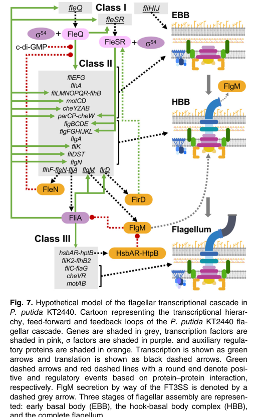

flgM encodes the anti-sigma-28 factor that negatively regulates flagellin gene transcription by binding FliA until flagellar assembly has reached the appropriate stage.
| GO Term | Evidence | Action | Reason |
|---|---|---|---|
|
GO:0045892
negative regulation of DNA-templated transcription
|
IEA
GO_REF:0000002 |
ACCEPT |
Summary: This annotation is appropriate. FlgM is the anti-sigma-28 factor that prevents FliA-dependent transcription of flagellin genes until flagellar assembly is ready.
Reason: Negative regulation of DNA-templated transcription captures the direct anti-sigma regulatory effect.
Supporting Evidence:
file:PSEPK/flgM/flgM-uniprot.txt
Responsible for the coupling of flagellin expression to
file:PSEPK/flgM/flgM-uniprot.txt
preventing expression of the flagellin genes
file:PSEPK/flgM/flgM-goa.tsv
GO:0045892 negative regulation of DNA-templated transcription
file:PSEPK/flgM/flgM-deep-research-falcon.md
FlgM is a **cytoplasmic anti-σ factor** that antagonizes **FliA (σ28)**, thereby acting as a **negative regulator of late flagellar gene expression** (including flagellin/filament genes).
file:PSEPK/flgM/flgM-deep-research-falcon.md
PP_4395** is explicitly annotated as **“Negative regulator of flagellin synthesis FlgM”** and is downregulated when FliA is absent, matching the canonical FliA–FlgM regulatory pair.
PMID:27663176
FliA and the cytoplasmic anti‐sigma factor FlgM depresses transcription of class IV flagellar genes by inhibiting the FliA‐RNA polymerase association until completion of the hook‐basal body complex, at which point the anti‐sigma factor is secreted
|
|
GO:0016989
sigma factor antagonist activity
|
ISS
file:PSEPK/flgM/flgM-uniprot.txt |
NEW |
Summary: FlgM directly antagonizes the flagellar sigma factor FliA, so sigma factor antagonist activity captures the direct molecular mechanism behind the transcriptional repression.
Reason: GO:0016989 is defined as binding to a sigma factor and reducing its transcriptional activity, matching the conserved anti-sigma-28 function of FlgM.
Supporting Evidence:
file:PSEPK/flgM/flgM-uniprot.txt
AltName: Full=Anti-sigma-28 factor
file:PSEPK/flgM/flgM-uniprot.txt
preventing expression of the flagellin genes
file:PSEPK/flgM/flgM-uniprot.txt
Anti-sigma factor FlgM
file:PSEPK/flgM/flgM-deep-research-falcon.md
FlgM is a **protein anti-sigma factor** that binds the flagellar sigma factor **FliA (σ28)** and inhibits FliA-dependent transcription of late/class III-IV flagellar genes until assembly reaches the proper checkpoint.
file:PSEPK/flgM/flgM-deep-research-falcon.md
whose primary molecular role is to **bind/sequester FliA**, preventing FliA from associating with RNA polymerase and thereby blocking FliA-dependent transcription until a defined assembly checkpoint is satisfied.
PMID:27663176
FliA and the cytoplasmic anti‐sigma factor FlgM depresses transcription of class IV flagellar genes by inhibiting the FliA‐RNA polymerase association until completion of the hook‐basal body complex, at which point the anti‐sigma factor is secreted
|
Q: Which assembly checkpoint controls FlgM release or inactivation in P. putida KT2440?
Experiment: Measure FliA-dependent promoter activity and flagellin abundance in flgM deletion, fliA deletion, and assembly-defective backgrounds.
Hypothesis: FlgM restrains FliA-dependent flagellin transcription until the basal body-hook assembly checkpoint is satisfied.
Type: epistasis and promoter reporter assay
The research report should be a detailed narrative explaining the function, biological processes, and localization of the gene product. Citations should be given for all claims.
You should prioritize authoritative reviews and primary scientific literature when conducting research. You can supplement
this with annotations you find in gene/protein databases, but these can be outdated or inaccurate.
We are specifically interested in the primary function of the gene - for enzymes, what reaction is catalyzed, and what is the substrate specificity? For transporters, what is the substrate? For structural proteins or adapters, what is the broader structural role? For signaling molecules, what is the role in the pathway.
We are interested in where in or outside the cell the gene product carries out its function.
We are also interested in the signaling or biochemical pathways in which the gene functions. We are less interested in broad pleiotropic effects, except where these elucidate the precise role.
Include evidence where possible. We are interested in both experimental evidence as well as inference from structure, evolution, or bioinformatic analysis. Precise studies should be prioritized over high-throughput, where available.
The UniProt entry Q88EQ8 describes FlgM, a negative regulator of flagellin synthesis / anti-σ28 factor in Pseudomonas putida KT2440. This identity is consistent with P. putida KT2440 experimental literature: in a KT2440 fliA (σ28) mutant transcriptome, the locus PP_4395 is explicitly annotated as “Negative regulator of flagellin synthesis FlgM” and is downregulated when FliA is absent, matching the canonical FliA–FlgM regulatory pair. (navarro‐aviles2010physiologicalandtranscriptomic pages 4-5)
Bacterial RNA polymerase requires σ factors to recognize promoter motifs. FliA (σ28) is a flagellar σ factor that activates transcription of late flagellar genes, especially those needed for filament completion and motility functions. FlgM is an anti-σ28 factor whose primary molecular role is to bind/sequester FliA, preventing FliA from associating with RNA polymerase and thereby blocking FliA-dependent transcription until a defined assembly checkpoint is satisfied. (xiao2017expressionofthe pages 1-2)
A central concept in flagellar gene regulation in Gram-negative bacteria is the hook–basal body (HBB) checkpoint, which ensures that energetically costly late flagellar proteins (notably filament components like flagellin) are synthesized only when the secretion/assembly apparatus is ready. In the canonical model summarized in Pseudomonas literature, FlgM represses FliA-dependent transcription until HBB completion, and FlgM export/secretion via the flagellar type III secretion system (FT3SS) relieves this repression by physically removing FlgM from the cytoplasm, freeing FliA. (xiao2017expressionofthe pages 1-2, oladosu2024fliptheswitch pages 3-4, leal‐morales2022transcriptionalorganizationand pages 14-15)
The primary function of P. putida KT2440 FlgM (PP_4395; Q88EQ8) is regulatory—not enzymatic: FlgM is a cytoplasmic anti-σ factor that antagonizes FliA (σ28), thereby acting as a negative regulator of late flagellar gene expression (including flagellin/filament genes). This is the function implied by its annotation and supported by KT2440 pathway models and Pseudomonas mechanistic syntheses. (navarro‐aviles2010physiologicalandtranscriptomic pages 4-5, xiao2017expressionofthe pages 1-2, leal‐morales2022transcriptionalorganizationand pages 14-15)
In KT2440-focused work and related Pseudomonas reviews, the mechanism is described as follows:
- Before completion of the hook–basal body, FlgM is intracellular (cytoplasmic) and inhibits FliA activity by binding it, preventing transcription of FliA-controlled late genes. (xiao2017expressionofthe pages 1-2)
- After hook completion/assembly checkpoint satisfaction, FlgM is exported (classically via the flagellar export apparatus/FT3SS), which releases FliA and triggers the final tier of the transcriptional cascade. (leal‐morales2022transcriptionalorganizationand pages 14-15, leal‐morales2022transcriptionalorganizationand pages 14-14)
Evidence caveat (important for functional annotation): in the retrieved KT2440 corpus, FlgM export is presented as a conserved checkpoint mechanism for Pseudomonas/Gram-negative flagellar systems and incorporated into KT2440 regulatory models, but a direct KT2440-specific FlgM secretion assay (e.g., immunoblot of supernatant for PP_4395) was not retrieved. (leal‐morales2022transcriptionalorganizationand pages 14-15, leal‐morales2022transcriptionalorganizationand pages 14-14)
A detailed KT2440 regulatory framework describes a three-tier cascade:
- Class I: fleQ (top-level regulator)
- Class II: FleQ- and σ54 (RpoN)-dependent genes encoding major structural components and regulatory elements (including fliA)
- Class III (late genes): FliA-dependent genes enabling filament synthesis, one stator complex, and completion of chemotaxis machinery
In this architecture, the FlgM–FliA interaction is part of the terminal checkpoint that gates transition into the FliA-driven late program. A KT2440 flagellar-cascade diagram is provided in the cited work (Figure 7). (leal‐morales2022transcriptionalorganizationand pages 14-15, leal‐morales2022transcriptionalorganizationand media 0ce269da)
In P. putida KT2440, flgM is not an isolated gene: it is co-transcribed in a flgM–flgN–pp4397 (flgZ) tricistronic operon, experimentally supported by RT-PCR. Transcription is driven by:
- a σFliA-dependent promoter (PflgM) immediately upstream of flgM, and
- partial contribution from upstream σ54-dependent transcription via read-through from the flgA region.
This promoter architecture ties FlgM production to the σ28 program while maintaining some upstream coupling to σ54-controlled transcription. (wirebrand2018pp4397flgzprovidesthe pages 2-3)
Multiple feedback motifs are consistent with checkpoint logic:
- In KT2440 transcriptomics, PP_4395/flgM is reduced in a fliA mutant, consistent with FliA → flgM transcriptional activation (negative feedback because FlgM inhibits FliA). (navarro‐aviles2010physiologicalandtranscriptomic pages 4-5)
- The KT2440 flagellar regulation synthesis notes that FliA-dependent transcription can also drive early regulator genes (e.g., fleQ/fleSR within an operon context), creating positive feedback that reinforces the flagellar program once the FlgM checkpoint is cleared. (leal‐morales2022transcriptionalorganizationand pages 14-14)
FlgM must access FliA and therefore acts in the cytoplasm where σ factors and core RNA polymerase interact. This cytoplasmic mode of action is explicitly described in Pseudomonas-focused mechanistic summaries and used as the basis for the export-checkpoint model. (xiao2017expressionofthe pages 1-2)
Flagellar assembly is coupled to transcription via export of FlgM, which removes the inhibitory anti-σ factor from the cytoplasm, thereby enabling FliA activity. This is described in Pseudomonas reviews and incorporated into KT2440-specific regulatory descriptions as a conserved mechanism, but (as noted above) direct KT2440 secretion measurement was not retrieved in this run. (leal‐morales2022transcriptionalorganizationand pages 14-15, leal‐morales2022transcriptionalorganizationand pages 14-14)
In a KT2440 fliA mutant transcriptome, multiple motility/flagellar/chemotaxis genes are downregulated, and PP_4395 (FlgM) itself is reported downregulated with a fold change ≈ −1.8, with indication of a putative FliA motif upstream—supporting that flgM is part of the σ28-linked regulatory module in KT2440. (navarro‐aviles2010physiologicalandtranscriptomic pages 4-5)
In KT2440, FliA is experimentally shown to partly control transcription of bifA, encoding a phosphodiesterase that decreases intracellular c-di-GMP, a second messenger generally antagonistic to motility. Deletion of fliA causes an approximately twofold decrease in bifA transcription, and σ28 promoter mutation reduces promoter activity in the wild type but not in a fliA mutant. FliA overexpression decreases c-di-GMP in a BifA-dependent manner and enhances swimming in wild type but not in a bifA mutant. This places FlgM (as the inhibitor of FliA) upstream of a regulatory connection between the flagellar cascade and c-di-GMP-controlled lifestyle decisions. (xiao2017expressionofthe pages 1-2)
Single-round in vitro transcription assays demonstrate that reconstituted σFliA-RNA polymerase can drive transcription from PflgM, and in vivo reporters show reduced (not abolished) expression in fliA-null and rpoN-null backgrounds, consistent with dual σ28 and σ54 contributions. (wirebrand2018pp4397flgzprovidesthe pages 2-3)
Direct 2023–2024 experimental studies specifically interrogating KT2440 FlgM (PP_4395/Q88EQ8) were not retrieved in this run. However, an authoritative 2024 Pseudomonas aeruginosa review synthesizes current understanding of the FlgM–FliA export checkpoint and its integration with higher-level regulators (e.g., FleQ) and second-messenger signaling (c-di-GMP): FlgM sequesters FliA until the HBB is assembled, after which FlgM export releases FliA to activate class IV genes (including flagellin and motility genes). The review also describes partner-switching mechanisms that can antagonize FlgM-mediated sequestration in response to upstream cues and emphasizes c-di-GMP-dependent reprogramming between motile and biofilm states. These concepts are considered transferable mechanistic context for environmental pseudomonads such as P. putida, consistent with the conservation-based interpretation in KT2440 flagellar cluster analyses. (oladosu2024fliptheswitch pages 3-4)
The KT2440 PflgM promoter is experimentally validated and used with in vivo transcriptional fusions and in vitro transcription assays, making the flgM regulatory region (and by extension the FlgM–FliA module) a practical tool to measure σ28/FliA activity during motility studies or chassis engineering where motility impacts performance. (wirebrand2018pp4397flgzprovidesthe pages 2-3)
Because FliA can modulate c-di-GMP via BifA in KT2440, any upstream modulation of FliA availability (including by FlgM) is mechanistically relevant for tuning swimming motility and potentially the motile-to-sessile transition, which matters for environmental colonization and bioprocess robustness. (xiao2017expressionofthe pages 1-2)
Limitations: No retrieved 2023–2024 paper demonstrated an explicit industrial deployment using KT2440 FlgM as a synthetic biology “part” (e.g., orthogonal switch) in the way classical repressors are used; thus applications are reported conservatively as experimentally supported uses in motility regulation/probing and mechanism-informed engineering relevance. (wirebrand2018pp4397flgzprovidesthe pages 2-3, oladosu2024fliptheswitch pages 3-4)
A KT2440-centered synthesis emphasizes that the P. putida flagellar cluster’s operon architecture and promoter motifs are highly conserved among environmental pseudomonads, supporting the view that the FlgM–FliA export-checkpoint logic is a core organizing principle of the cascade in this lineage. (leal‐morales2022transcriptionalorganizationand pages 14-15)
The following table consolidates identity, function, mechanism, localization, pathway position, and evidence strength.
| Aspect | Summary | Key references with year and URL |
|---|---|---|
| Identity | FlgM / PP_4395 / UniProt Q88EQ8 in Pseudomonas putida KT2440 matches the canonical anti-σ28 factor / negative regulator of flagellin synthesis. In KT2440 transcriptomic annotation, PP_4395 is explicitly labeled “Negative regulator of flagellin synthesis FlgM”; this agrees with the UniProt description and FlgM family/domain assignment. (navarro‐aviles2010physiologicalandtranscriptomic pages 4-5) | Navarro-Avilés & Van Dillewijn, 2010, https://doi.org/10.1111/j.1758-2229.2009.00084 |
| Molecular function | FlgM is a protein anti-sigma factor that binds the flagellar sigma factor FliA (σ28) and inhibits FliA-dependent transcription of late/class III-IV flagellar genes until assembly reaches the proper checkpoint. It is not an enzyme; its primary function is regulatory sequestration of FliA. (xiao2017expressionofthe pages 1-2, leal‐morales2022transcriptionalorganizationand pages 14-15, leal‐morales2022transcriptionalorganizationand pages 14-14) | Xiao et al., 2017, https://doi.org/10.1002/mbo3.402; Leal-Morales et al., 2022, https://doi.org/10.1111/1462-2920.15857 |
| Mechanism | Supported model for KT2440/Pseudomonas: FlgM acts in the cytoplasm to inhibit FliA; when the hook-basal body / FT3SS checkpoint is satisfied, FlgM is exported/secretion-coupled, releasing FliA and enabling late flagellar gene transcription. In KT2440 this is presented as the conserved activation logic of the final transcriptional tier. (xiao2017expressionofthe pages 1-2, leal‐morales2022transcriptionalorganizationand pages 14-15, leal‐morales2022transcriptionalorganizationand pages 14-14) | Xiao et al., 2017, https://doi.org/10.1002/mbo3.402; Leal-Morales et al., 2022, https://doi.org/10.1111/1462-2920.15857 |
| Localization | Best-supported localization is cytoplasmic before export, where FlgM binds FliA. After completion of the assembly checkpoint, FlgM is proposed to be exported via the flagellar type III secretion system (FT3SS). Direct FlgM export was discussed for Pseudomonas and inferred as conserved for KT2440, but the gathered evidence did not include a KT2440-specific direct secretion assay for PP_4395. (xiao2017expressionofthe pages 1-2, leal‐morales2022transcriptionalorganizationand pages 14-15, leal‐morales2022transcriptionalorganizationand pages 14-14) | Xiao et al., 2017, https://doi.org/10.1002/mbo3.402; Leal-Morales et al., 2022, https://doi.org/10.1111/1462-2920.15857 |
| Pathway position | FlgM sits in the late checkpoint of the flagellar transcriptional cascade downstream of FleQ/σ54-controlled early-class genes and immediately upstream of FliA-dependent late genes. Figure-level synthesis for KT2440 supports a three-tier hierarchy in which FliA activation is the terminal step controlling filament/stator/final chemotaxis functions. (leal‐morales2022transcriptionalorganizationand pages 14-15, leal‐morales2022transcriptionalorganizationand pages 14-14, leal‐morales2022transcriptionalorganizationand media 0ce269da) | Leal-Morales et al., 2022, https://doi.org/10.1111/1462-2920.15857 |
| Regulators / partners | Direct/near-direct partners and regulators supported in KT2440 evidence: FliA (σ28) is the cognate sigma factor inhibited by FlgM; FlgN and PP4397/FlgZ are co-transcribed with flgM in a flgM-flgN-pp4397 tricistronic operon; σFliA activates the promoter immediately upstream of flgM (PflgM); σ54/RpoN contributes via readthrough from upstream flgA transcription. KT2440 also encodes HsbA/HsbR/HptB orthologues, suggesting possible partner-switching regulation, but this was noted as a plausible mechanism rather than directly tested in the cited KT2440 study. (wirebrand2018pp4397flgzprovidesthe pages 2-3, leal‐morales2022transcriptionalorganizationand pages 14-15, leal‐morales2022transcriptionalorganizationand pages 14-14) | Wirebrand et al., 2018, https://doi.org/10.1038/s41598-018-29785-w; Leal-Morales et al., 2022, https://doi.org/10.1111/1462-2920.15857 |
| Downstream genes / outputs | Through inhibition of FliA, FlgM negatively controls late flagellar outputs, including flagellin/filament genes and motility functions. In KT2440 and related Pseudomonas evidence, FliA-dependent targets include fliC, flaG, fliD, fliS, multiple chemotaxis genes, and motility-linked functions. FliA also contributes to bifA transcription, linking the flagellar cascade to c-di-GMP lowering and enhanced swimming. (navarro‐aviles2010physiologicalandtranscriptomic pages 4-5, xiao2017expressionofthe pages 1-2, leal‐morales2022transcriptionalorganizationand pages 14-15, leal‐morales2022transcriptionalorganizationand pages 14-14) | Navarro-Avilés & Van Dillewijn, 2010, https://doi.org/10.1111/j.1758-2229.2009.00084; Xiao et al., 2017, https://doi.org/10.1002/mbo3.402 |
| Experimental evidence / data points | Quantitative and direct evidence in KT2440 includes: PP_4395/flgM downregulated ~1.8-fold in a fliA mutant transcriptome, with a putative upstream FliA motif; bifA transcription decreased ~2-fold in a fliA deletion mutant; mutation of the σ28 promoter reduced promoter activity in wild type but not in the fliA mutant; in vitro single-round transcription confirmed σFliA-RNAP can drive PflgM; RT-PCR showed flgM-flgN-pp4397 co-transcription; reporter assays in wild type versus FliA-null and RpoN-null backgrounds showed reduced, but not abolished, flgM operon expression, consistent with dual control. (navarro‐aviles2010physiologicalandtranscriptomic pages 4-5, xiao2017expressionofthe pages 1-2, wirebrand2018pp4397flgzprovidesthe pages 2-3) | Navarro-Avilés & Van Dillewijn, 2010, https://doi.org/10.1111/j.1758-2229.2009.00084; Xiao et al., 2017, https://doi.org/10.1002/mbo3.402; Wirebrand et al., 2018, https://doi.org/10.1038/s41598-018-29785-w |
| Applications / implementation notes | No 2023-2024 KT2440 paper in the gathered evidence used FlgM itself as a standalone biotechnology part, but the FlgM–FliA checkpoint is functionally relevant to motility engineering, biofilm–planktonic switching, and c-di-GMP control in Pseudomonas. In KT2440, FliA-dependent control of bifA connects late flagellar regulation to intracellular signaling affecting swimming; more broadly, the cascade is useful for interpreting phenotypes in chassis engineering where motility or surface colonization matters. Because direct PP_4395 perturbation data in KT2440 were limited, implementation conclusions should be considered mechanism-informed rather than directly engineered demonstrations. (xiao2017expressionofthe pages 1-2, wirebrand2018pp4397flgzprovidesthe pages 2-3, leal‐morales2022transcriptionalorganizationand pages 14-14, leal‐morales2022transcriptionalorganizationand media 0ce269da) | Xiao et al., 2017, https://doi.org/10.1002/mbo3.402; Wirebrand et al., 2018, https://doi.org/10.1038/s41598-018-29785-w; Leal-Morales et al., 2022, https://doi.org/10.1111/1462-2920.15857 |
| Evidence strength / caveats | Confidence is high for identity, anti-σ28 function, operon context, FliA-dependent transcription, and placement in the KT2440 flagellar cascade. Confidence is moderate for the exact export behavior of KT2440 FlgM because the gathered evidence mainly presents a conserved model/inference rather than a direct KT2440 secretion assay. Claims about partner-switching via HsbA/HsbR/HptB are hypothesis-supported/background-supported in KT2440, not directly demonstrated for PP_4395 in the cited papers. (wirebrand2018pp4397flgzprovidesthe pages 2-3, leal‐morales2022transcriptionalorganizationand pages 14-15, leal‐morales2022transcriptionalorganizationand pages 14-14) | Wirebrand et al., 2018, https://doi.org/10.1038/s41598-018-29785-w; Leal-Morales et al., 2022, https://doi.org/10.1111/1462-2920.15857 |
Table: This table summarizes the functional annotation of Pseudomonas putida KT2440 FlgM (PP_4395; UniProt Q88EQ8), focusing on experimentally supported identity, mechanism, localization, regulation, and pathway context. It emphasizes what is directly shown in the gathered evidence and flags where conclusions are based on conserved models rather than direct KT2440 assays.
References
(navarro‐aviles2010physiologicalandtranscriptomic pages 4-5): G Navarro‐Avilés and P Van Dillewijn. Physiological and transcriptomic characterization of a flia mutant of pseudomonas putida kt2440. Unknown journal, 2010. URL: https://doi.org/10.1111/j.1758-2229.2009.00084, doi:10.1111/j.1758-2229.2009.00084.
(xiao2017expressionofthe pages 1-2): Yujie Xiao, Huizhong Liu, Hailing Nie, Shan Xie, Xuesong Luo, Wenli Chen, and Qiaoyun Huang. Expression of the phosphodiesterase bifa facilitating swimming motility is partly controlled by flia in pseudomonas putida kt2440. MicrobiologyOpen, 6:e00402, Sep 2017. URL: https://doi.org/10.1002/mbo3.402, doi:10.1002/mbo3.402. This article has 16 citations and is from a peer-reviewed journal.
(oladosu2024fliptheswitch pages 3-4): Victoria I. Oladosu, Soyoung Park, and Karin Sauer. Flip the switch: the role of fleq in modulating the transition between the free-living and sessile mode of growth in pseudomonas aeruginosa. Mar 2024. URL: https://doi.org/10.1128/jb.00365-23, doi:10.1128/jb.00365-23. This article has 27 citations and is from a peer-reviewed journal.
(leal‐morales2022transcriptionalorganizationand pages 14-15): Antonio Leal‐Morales, Marta Pulido‐Sánchez, Aroa López‐Sánchez, and Fernando Govantes. Transcriptional organization and regulation of the pseudomonas putida flagellar system. Environmental Microbiology, 24:137-157, Dec 2022. URL: https://doi.org/10.1111/1462-2920.15857, doi:10.1111/1462-2920.15857. This article has 31 citations and is from a domain leading peer-reviewed journal.
(leal‐morales2022transcriptionalorganizationand pages 14-14): Antonio Leal‐Morales, Marta Pulido‐Sánchez, Aroa López‐Sánchez, and Fernando Govantes. Transcriptional organization and regulation of the pseudomonas putida flagellar system. Environmental Microbiology, 24:137-157, Dec 2022. URL: https://doi.org/10.1111/1462-2920.15857, doi:10.1111/1462-2920.15857. This article has 31 citations and is from a domain leading peer-reviewed journal.
(leal‐morales2022transcriptionalorganizationand media 0ce269da): Antonio Leal‐Morales, Marta Pulido‐Sánchez, Aroa López‐Sánchez, and Fernando Govantes. Transcriptional organization and regulation of the pseudomonas putida flagellar system. Environmental Microbiology, 24:137-157, Dec 2022. URL: https://doi.org/10.1111/1462-2920.15857, doi:10.1111/1462-2920.15857. This article has 31 citations and is from a domain leading peer-reviewed journal.
(wirebrand2018pp4397flgzprovidesthe pages 2-3): Lisa Wirebrand, Sofia Österberg, Aroa López-Sánchez, Fernando Govantes, and Victoria Shingler. Pp4397/flgz provides the link between pp2258 c-di-gmp signalling and altered motility in pseudomonas putida. Scientific Reports, Aug 2018. URL: https://doi.org/10.1038/s41598-018-29785-w, doi:10.1038/s41598-018-29785-w. This article has 14 citations and is from a peer-reviewed journal.

id: Q88EQ8
gene_symbol: flgM
product_type: PROTEIN
status: DRAFT
taxon:
id: NCBITaxon:160488
label: Pseudomonas putida (strain ATCC 47054 / DSM 6125 / CFBP 8728 / NCIMB 11950 / KT2440)
description: flgM encodes the anti-sigma-28 factor that negatively regulates flagellin gene transcription
by binding FliA until flagellar assembly has reached the appropriate stage.
existing_annotations:
- term:
id: GO:0045892
label: negative regulation of DNA-templated transcription
evidence_type: IEA
original_reference_id: GO_REF:0000002
review:
summary: This annotation is appropriate. FlgM is the anti-sigma-28 factor that prevents FliA-dependent
transcription of flagellin genes until flagellar assembly is ready.
action: ACCEPT
reason: Negative regulation of DNA-templated transcription captures the direct anti-sigma regulatory
effect.
supported_by:
- reference_id: file:PSEPK/flgM/flgM-uniprot.txt
supporting_text: Responsible for the coupling of flagellin expression to
- reference_id: file:PSEPK/flgM/flgM-uniprot.txt
supporting_text: preventing expression of the flagellin genes
- reference_id: file:PSEPK/flgM/flgM-goa.tsv
supporting_text: "GO:0045892\tnegative regulation of DNA-templated transcription"
- reference_id: file:PSEPK/flgM/flgM-deep-research-falcon.md
supporting_text: |-
FlgM is a **cytoplasmic anti-σ factor** that antagonizes **FliA (σ28)**, thereby acting as a **negative regulator of late flagellar gene expression** (including flagellin/filament genes).
- reference_id: file:PSEPK/flgM/flgM-deep-research-falcon.md
supporting_text: |-
PP_4395** is explicitly annotated as **“Negative regulator of flagellin synthesis FlgM”** and is downregulated when FliA is absent, matching the canonical FliA–FlgM regulatory pair.
- reference_id: PMID:27663176
supporting_text: FliA and the cytoplasmic anti‐sigma factor FlgM depresses transcription of class
IV flagellar genes by inhibiting the FliA‐RNA polymerase association until completion of the hook‐basal
body complex, at which point the anti‐sigma factor is secreted
- term:
id: GO:0016989
label: sigma factor antagonist activity
evidence_type: ISS
original_reference_id: file:PSEPK/flgM/flgM-uniprot.txt
review:
summary: FlgM directly antagonizes the flagellar sigma factor FliA, so sigma factor antagonist activity
captures the direct molecular mechanism behind the transcriptional repression.
action: NEW
reason: GO:0016989 is defined as binding to a sigma factor and reducing its transcriptional activity,
matching the conserved anti-sigma-28 function of FlgM.
supported_by:
- reference_id: file:PSEPK/flgM/flgM-uniprot.txt
supporting_text: 'AltName: Full=Anti-sigma-28 factor'
- reference_id: file:PSEPK/flgM/flgM-uniprot.txt
supporting_text: preventing expression of the flagellin genes
- reference_id: file:PSEPK/flgM/flgM-uniprot.txt
supporting_text: Anti-sigma factor FlgM
- reference_id: file:PSEPK/flgM/flgM-deep-research-falcon.md
supporting_text: |-
FlgM is a **protein anti-sigma factor** that binds the flagellar sigma factor **FliA (σ28)** and inhibits FliA-dependent transcription of late/class III-IV flagellar genes until assembly reaches the proper checkpoint.
- reference_id: file:PSEPK/flgM/flgM-deep-research-falcon.md
supporting_text: |-
whose primary molecular role is to **bind/sequester FliA**, preventing FliA from associating with RNA polymerase and thereby blocking FliA-dependent transcription until a defined assembly checkpoint is satisfied.
- reference_id: PMID:27663176
supporting_text: FliA and the cytoplasmic anti‐sigma factor FlgM depresses transcription of class
IV flagellar genes by inhibiting the FliA‐RNA polymerase association until completion of the hook‐basal
body complex, at which point the anti‐sigma factor is secreted
references:
- id: GO_REF:0000002
title: Gene Ontology annotation through association of InterPro records with GO terms
findings: []
- id: PMID:23766109
title: Physiological and transcriptomic characterization of a fliA mutant of Pseudomonas putida KT2440.
findings:
- statement: In a P. putida KT2440 fliA (sigma-28) mutant, expression of 25 genes was affected (two
upregulated, 23 downregulated), including motility and chemotaxis genes; flgM (PP_4395) is part
of the sigma-28/FliA-controlled regulatory module, consistent with FliA-dependent transcriptional
activation of flgM.
reference_section_type: RESULTS
- statement: 'Quote: "In the fliA mutant background expression of 25 genes was affected: two genes
were upregulated and 23 genes were downregulated."'
reference_section_type: ABSTRACT
- id: PMID:27663176
title: Expression of the phosphodiesterase BifA facilitating swimming motility is partly controlled
by FliA in Pseudomonas putida KT2440.
findings:
- statement: Describes the canonical anti-sigma-28 mechanism operating in P. putida KT2440 - the cytoplasmic
anti-sigma factor FlgM inhibits the FliA-RNA polymerase association, repressing transcription of
late (class IV) flagellar genes until the hook-basal body is complete, at which point FlgM is secreted.
reference_section_type: INTRODUCTION
- statement: 'Quote: "FliA and the cytoplasmic anti‐sigma factor FlgM depresses transcription of class
IV flagellar genes by inhibiting the FliA‐RNA polymerase association until completion of the hook‐basal
body complex, at which point the anti‐sigma factor is secreted"'
reference_section_type: INTRODUCTION
- id: PMID:30111852
title: PP4397/FlgZ provides the link between PP2258 c-di-GMP signalling and altered motility in Pseudomonas
putida.
findings:
- statement: Establishes the operon context of flgM in P. putida KT2440 - flgM is co-transcribed with
pp4396 (FlgN family) and pp4397/flgZ in a flgM-flgN-pp4397 operon, and explicitly identifies flgM
as the sigma-FliA anti-sigma-factor gene; the PflgM promoter is sigma-FliA dependent (verified by
single-round in vitro transcription with sigma-FliA-RNA polymerase) with read-through from an upstream
sigma-54-dependent flgA promoter.
reference_section_type: RESULTS
- statement: 'Quote: "co-transcribed with the σFliA anti-σ-factor gene flgM and pp4396 – a gene encoding
an FlgN family protein"'
reference_section_type: RESULTS
- id: PMID:34859548
title: Transcriptional organization and regulation of the Pseudomonas putida flagellar system.
findings:
- statement: Defines the three-tier flagellar transcriptional cascade in P. putida in which FliA (the
flagellar sigma factor, a Class II gene product) activates Class III genes enabling filament synthesis;
FlgM gates this terminal FliA-dependent step. Provides the regulatory framework placing FlgM-FliA
at the late checkpoint of the cascade.
reference_section_type: ABSTRACT
- statement: 'Quote: "FliA activation of Class III genes enables synthesis of the filament, one stator
complex and completion of the chemotaxis apparatus."'
reference_section_type: ABSTRACT
- id: PMID:38436566
title: 'Flip the switch: the role of FleQ in modulating the transition between the free-living and sessile
mode of growth in Pseudomonas aeruginosa.'
findings:
- statement: Authoritative 2024 review synthesizing the FlgM-FliA export checkpoint and its integration
with FleQ and c-di-GMP signalling in Pseudomonas; provides transferable mechanistic context for
environmental pseudomonads including P. putida (anti-sigma sequestration of FliA relieved by FlgM
export after hook-basal body assembly).
reference_section_type: OTHER
- id: file:PSEPK/flgM/flgM-uniprot.txt
title: UniProtKB entry for flgM (Negative regulator of flagellin synthesis)
findings:
- statement: UniProt identifies flgM as Negative regulator of flagellin synthesis and supplies function,
pathway, family, location, or GO cross-reference evidence used in this review.
- id: file:PSEPK/flgM/flgM-goa.tsv
title: QuickGO GOA annotations for flgM
findings:
- statement: The fetched GOA table contains the automated annotations reviewed for flgM.
- id: file:PSEPK/flgM/flgM-deep-research-falcon.md
title: Falcon (Edison Scientific) deep research report on P. putida KT2440 flgM (PP_4395; UniProt Q88EQ8)
findings:
- statement: |-
FlgM is a **protein anti-sigma factor** that binds the flagellar sigma factor **FliA (σ28)** and inhibits FliA-dependent transcription of late/class III-IV flagellar genes until assembly reaches the proper checkpoint.
reference_section_type: OTHER
- statement: |-
whose primary molecular role is to **bind/sequester FliA**, preventing FliA from associating with RNA polymerase and thereby blocking FliA-dependent transcription until a defined assembly checkpoint is satisfied.
reference_section_type: OTHER
- statement: |-
FlgM is a **cytoplasmic anti-σ factor** that antagonizes **FliA (σ28)**, thereby acting as a **negative regulator of late flagellar gene expression** (including flagellin/filament genes).
reference_section_type: OTHER
- statement: |-
FlgM must access FliA and therefore acts **in the cytoplasm** where σ factors and core RNA polymerase interact.
reference_section_type: OTHER
- statement: |-
FlgM represses FliA-dependent transcription **until HBB completion**, and **FlgM export/secretion** via the flagellar type III secretion system (FT3SS) relieves this repression by physically removing FlgM from the cytoplasm, freeing FliA.
reference_section_type: OTHER
- statement: |-
In *P. putida* KT2440, **flgM** is not an isolated gene: it is co-transcribed in a **flgM–flgN–pp4397 (flgZ)** tricistronic operon, experimentally supported by RT-PCR.
reference_section_type: OTHER
- statement: |-
PP_4395** is explicitly annotated as **“Negative regulator of flagellin synthesis FlgM”** and is downregulated when FliA is absent, matching the canonical FliA–FlgM regulatory pair.
reference_section_type: OTHER
- statement: |-
**Biological process:** timing/checkpoint control of late flagellar gene expression (filament and motility program) during flagellum biogenesis; integrates into three-tier flagellar transcriptional cascade.
reference_section_type: OTHER
core_functions:
- description: FlgM is an anti-sigma-28 factor that binds and inhibits FliA (sigma-28), negatively regulating
transcription of FliA-dependent late flagellar genes (including flagellin) to time their expression
with the flagellar assembly checkpoint.
directly_involved_in:
- id: GO:0045892
label: negative regulation of DNA-templated transcription
supported_by:
- reference_id: file:PSEPK/flgM/flgM-uniprot.txt
supporting_text: 'RecName: Full=Negative regulator of flagellin synthesis'
- reference_id: file:PSEPK/flgM/flgM-uniprot.txt
supporting_text: preventing expression of the flagellin genes
- reference_id: file:PSEPK/flgM/flgM-uniprot.txt
supporting_text: 'AltName: Full=Anti-sigma-28 factor'
- reference_id: file:PSEPK/flgM/flgM-uniprot.txt
supporting_text: Anti-sigma factor FlgM
- reference_id: file:PSEPK/flgM/flgM-deep-research-falcon.md
supporting_text: |-
FlgM is a **protein anti-sigma factor** that binds the flagellar sigma factor **FliA (σ28)** and inhibits FliA-dependent transcription of late/class III-IV flagellar genes until assembly reaches the proper checkpoint.
- reference_id: file:PSEPK/flgM/flgM-deep-research-falcon.md
supporting_text: |-
FlgM is a **cytoplasmic anti-σ factor** that antagonizes **FliA (σ28)**, thereby acting as a **negative regulator of late flagellar gene expression** (including flagellin/filament genes).
molecular_function:
id: GO:0016989
label: sigma factor antagonist activity
proposed_new_terms: []
suggested_questions:
- question: Which assembly checkpoint controls FlgM release or inactivation in P. putida KT2440?
suggested_experiments:
- hypothesis: FlgM restrains FliA-dependent flagellin transcription until the basal body-hook assembly
checkpoint is satisfied.
description: Measure FliA-dependent promoter activity and flagellin abundance in flgM deletion, fliA
deletion, and assembly-defective backgrounds.
experiment_type: epistasis and promoter reporter assay
{kind=link}